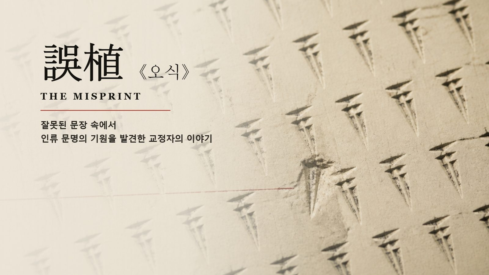
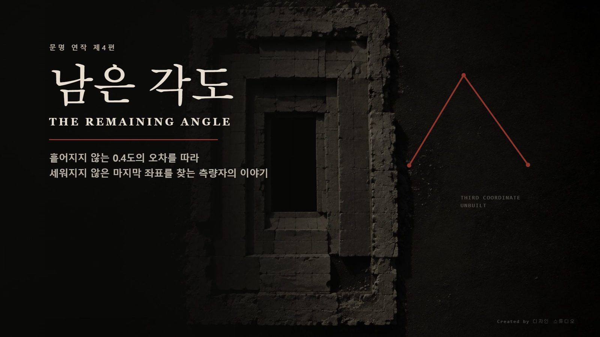
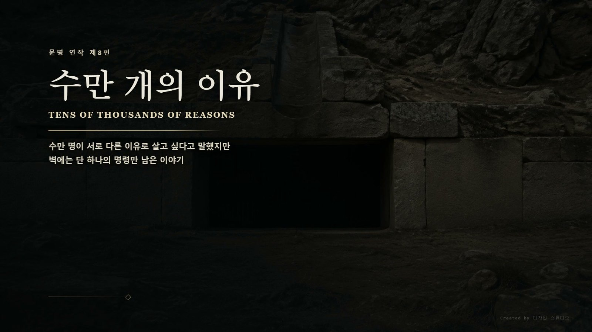
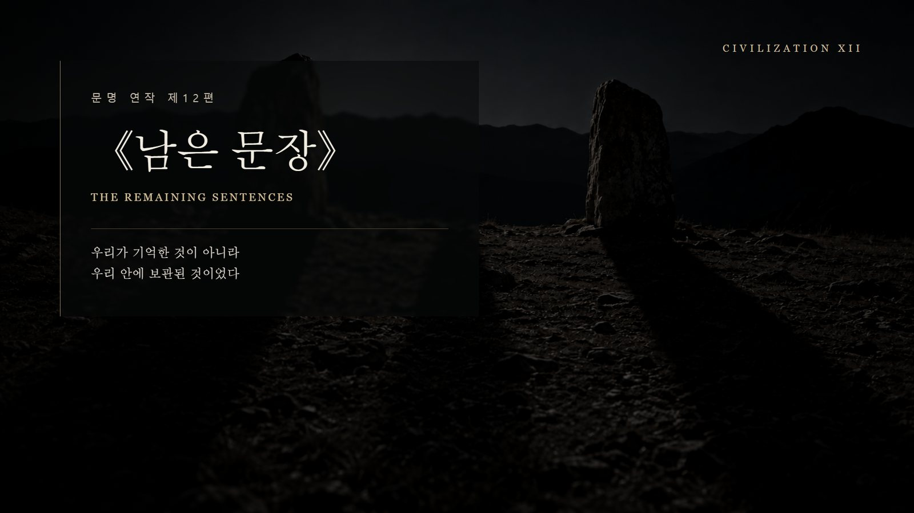

기록이 남으면 문명은 다시 시작되는가.
인간이 사라진 뒤에도 응답하는 파일, 사람의 손이 종이에 남긴 눌린 자국, 고치면 더 좋아지는 오류, 흩어지지 않는 0.4도의 오차. 문명 연작은 서로 다른 시대와 매체에 남은 기록을 단서로, 무엇이 문명을 이어지게 하는가를 묻는 연작 단편소설입니다. 각 편은 소설과 영상으로 함께 제작되며 전 12편으로 이어집니다.
기록의 발견에서 전쟁과 도착, 그리고 마지막 문장까지. 문명 연작 시즌 1의 전체 궤도를 60초로 압축한 공식 예고편입니다.
 문명 연작 제1편
문명 연작 제1편
 문명 연작 제2편
문명 연작 제2편

문명 연작 제3편
문명 연작 제4편 문명 연작 제5편
문명 연작 제5편
 문명 연작 제6편
문명 연작 제6편
 문명 연작 제7편
문명 연작 제7편

문명 연작 제8편 문명 연작 제9편
문명 연작 제9편
 문명 연작 제10편
문명 연작 제10편
 문명 연작 제11편
문명 연작 제11편

문명 연작 제12편